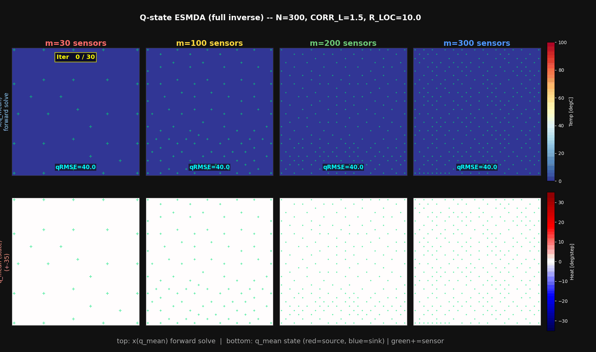
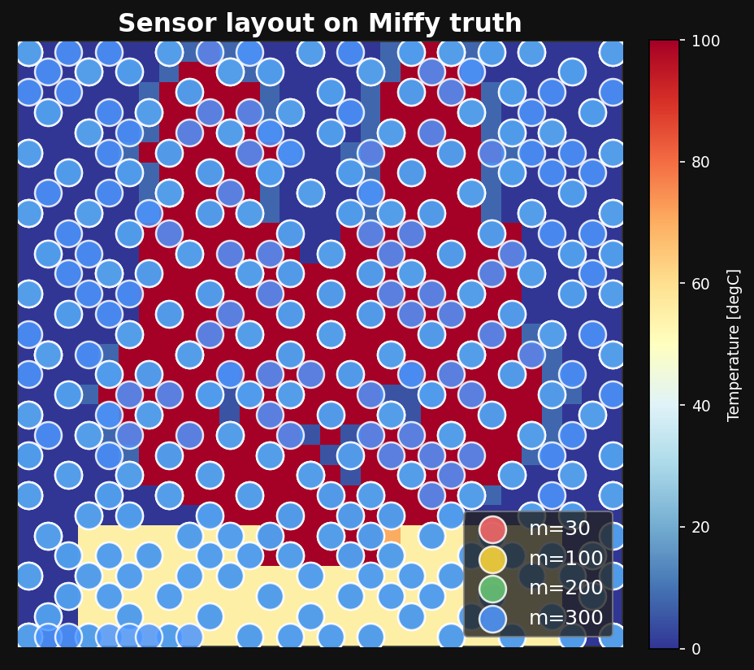
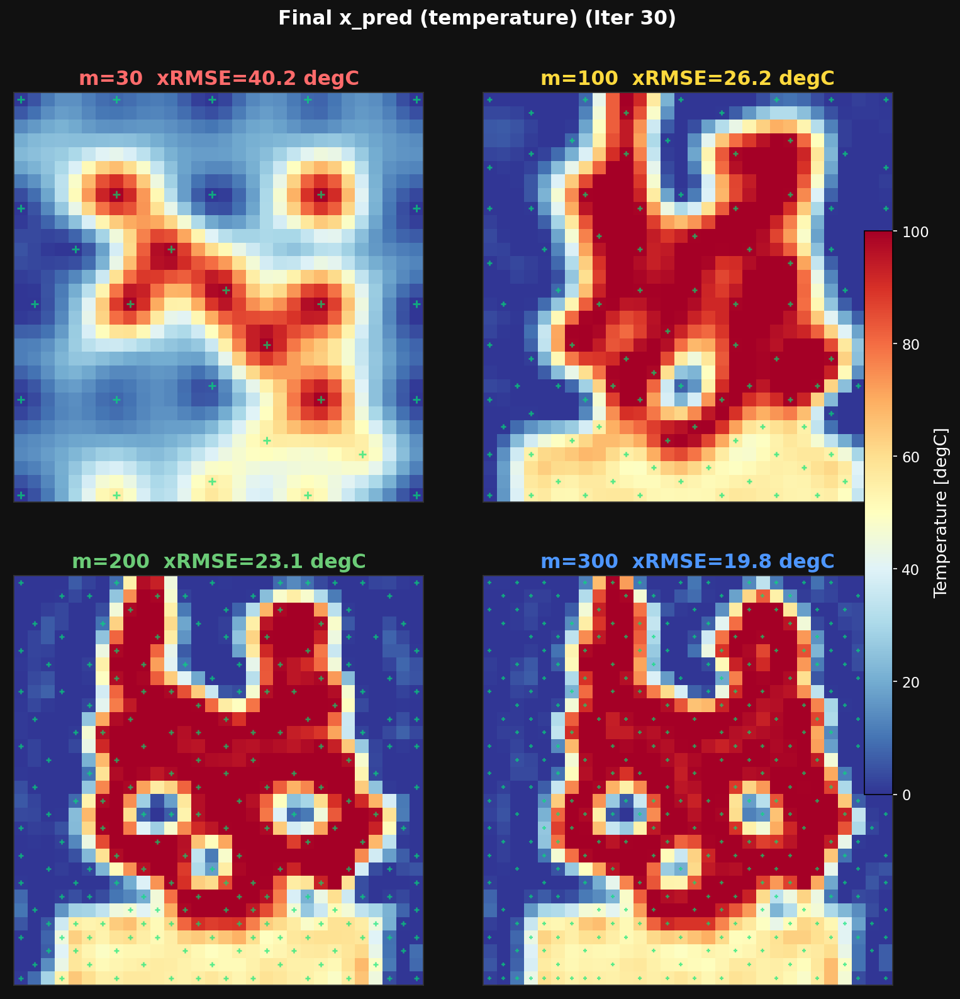
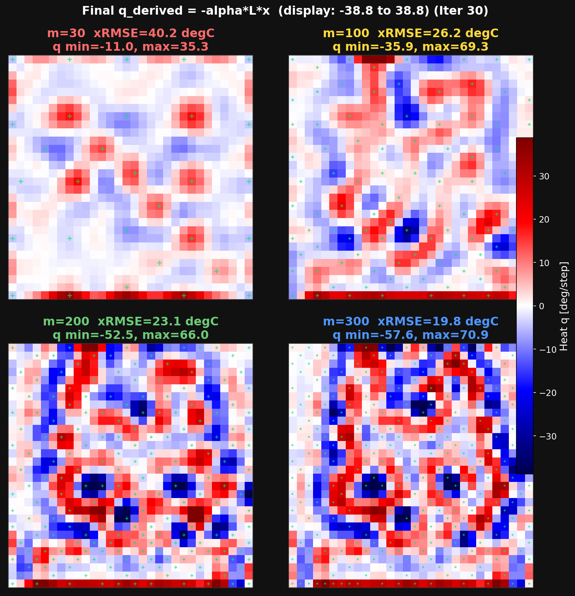
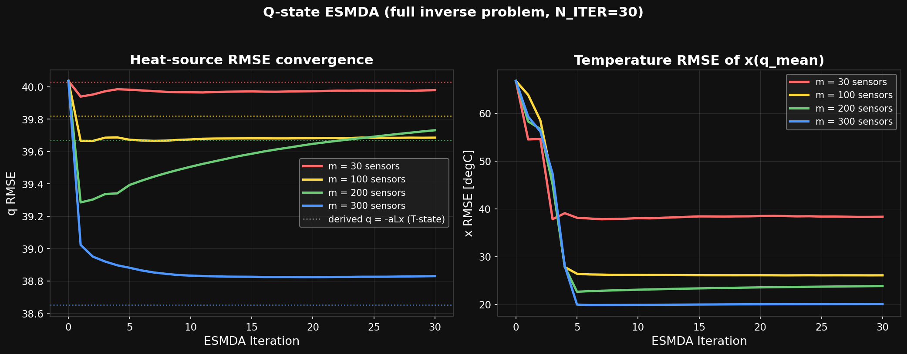
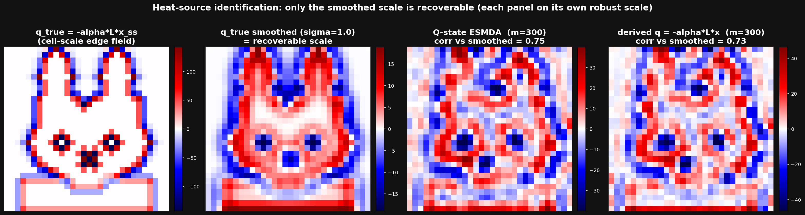
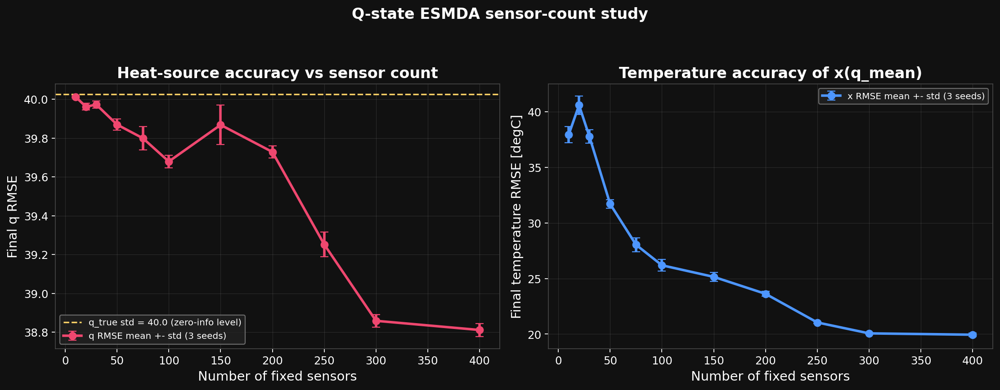
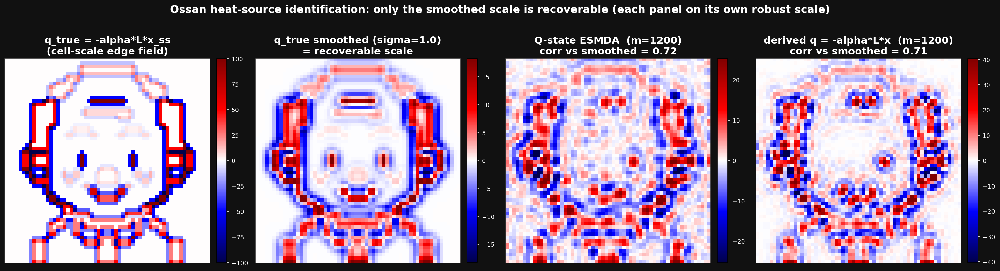

?print-pdf を付けてから、印刷先を PDF にしてください。
使用手法: 確率的 ESMDA（Ensemble Smoother with Multiple Data Assimilation）× 状態変数 = 熱源場
固定温度センサの点観測だけから、①温度場（900 未知数）と②それを作っている熱源場を推定する。形状の事前知識は使わない。
静的逆問題では ESMDA が最適。温度場は RMSE 20 °C で復元、熱源場は「観測が原理的に持つ情報の上限」（平滑化スケール）まで復元できた。
ベイズ推定 → カルマンゲインの導出 → EnKF / OI / ESMDA の位置づけ → 完全逆問題の不適切性 → コードとの 1:1 対応。

完全逆問題版 ESMDA — 上段: 推定熱源から順解析した温度場 / 下段: 推定熱源場。反復とともにミッフィーが現れる
本ケースは 3 つの実験で構成される。どこで何を推定しているのかを先に固定する。
| 推定対象（状態変数） | 観測演算子 \( \mathcal{H} \) | 結果 | 対応スクリプト | |
|---|---|---|---|---|
| 実験 1 | 温度場 \( \mathbf{x} \in \mathbb{R}^{900} \) | センサ位置の抜き出し \( \mathbf{H}\mathbf{x} \)（線形・局所） | 成功 19.8 °C | enkf_heatid.py |
| 実験 2 | （推定なし）実験 1 の結果から熱源を後処理で逆算 | — \( \;\mathbf{q}_{\rm der} = -\alpha \mathbf{L}\bar{\mathbf{x}} \) | 失敗 ノイズ増幅 | enkf_heatid.py の出力 |
| 実験 3 | 熱源場 \( \mathbf{q} \in \mathbb{R}^{900} \) | 順問題を含む \( \mathcal{H}(\mathbf{q}) = \mathbf{H}\,\mathbf{L}^{-1}(-\mathbf{q}/\alpha) \)（線形・非局所） | 成功（限界も定量化） | esmda_qfull.py |
| 状態変数 | 観測演算子 | 呼び名（本資料） | |
|---|---|---|---|
| 実験 1 | 温度場 x | センサ位置の抜き出し（順モデルなし） | T-state ESMDA |
| 実験 3 | 熱源場 q | 順問題 \( \mathbf{L}^{-1} \) を解いてからセンサ位置を抜き出し | Q-state ESMDA（本命） |
「ESMDA」はアルゴリズム（更新のしかた）の名前であり、状態変数に何を選ぶかは自由。 実験 1 と 3 で更新式は 1 文字も変わらない（§6.3 で実証）。OI・KF・EnKF との違いは §3 で導出付きで整理する。
ツイン実験 = 正解場を自分で作り、そこから観測を合成して、推定手法が正解にどこまで迫れるかを検証する枠組み。手法の性能だけを切り出して評価できる。

センサ配置。色はセンサ数 m のケース。背景が正解温度場。
センサのない場所の温度を知りたい。 監視・可視化・ホットスポット検出が動機。状態 = 温度場そのもの。 観測と状態が同じ物理量なので \( \mathcal{H} \) は単なるサンプリング。
「なぜその温度になっているのか」= どこで発熱・吸熱しているかを知りたい。 故障診断・設計検証が動機。観測（温度）と推定対象（熱源）が別の物理量で、 両者を物理モデルがつなぐ。これが逆問題・パラメータ同定の一般形。
記号の約束: 太字小文字 = ベクトル、太字大文字 = 行列。\( n = 900 \)（状態次元）、\( m \)（観測数）、 \( N \)（アンサンブル数）、\( N_a \)（ESMDA 反復数）。
1 次元の復習: ガウス分布は \( p(z) \propto \exp\!\left[-\frac{(z-\mu)^2}{2\sigma^2}\right] \)。 以下はその多変量版で、\( 1/\sigma^2 \)（precision, 確からしさ）の役割を逆行列 \( \mathbf{B}^{-1} \), \( \mathbf{R}^{-1} \) が担う。
仮定 (G1) 事前分布はガウス: 観測を見る前の推定値 \( \mathbf{x}_b \)（background）と、その信頼度を表す誤差共分散 \( \mathbf{B} \) を持つ。
仮定 (G2) 観測はノイズ付きで得られる: \( \mathbf{y} = \mathbf{H}\mathbf{x} + \boldsymbol{\varepsilon} \)、\( \boldsymbol{\varepsilon} \sim \mathcal{N}(\mathbf{0},\mathbf{R}) \)、\( \boldsymbol{\varepsilon} \) は x と独立。 すると「状態が x だったとき観測値 y が出る確率」（尤度）は、\( \boldsymbol{\varepsilon} = \mathbf{y}-\mathbf{H}\mathbf{x} \) の出現確率そのものだから
知りたいのはこの逆向き、「観測 y を見た後の x の分布」 \( p(\mathbf{x}|\mathbf{y}) \)。それを繋ぐのがベイズの定理（次スライド）。
ゲイン \( \mathbf{K} \) を「観測空間（m 次元）の逆行列」だけで書き直す。次の恒等式を示せば十分:
2.3 の (2) 式の左辺括弧が事後の精度行列だったから、事後共分散は
— 観測した方向の分散だけが縮む。精度（分散の逆数）で見ると「事前の精度 + 観測の精度」の足し算になっている。この加法性が後で ESMDA の等価性証明（§3.5）の鍵になる。
| 設計判断 | 選択肢 | 対応する手法 |
|---|---|---|
| ① B をどう作るか | 解析的な関数で与える ／ 力学で時間発展させる ／ サンプル（アンサンブル）で近似する | OI ／ KF ／ EnKF・ESMDA |
| ② 時間をどう扱うか | 観測が来るたび逐次更新（フィルタ）／ 全観測を一括同化（スムーザー） | KF・EnKF ／ ES・ESMDA・(OI) |
| ③ 更新を分割するか | 1 回で全部 ／ R を膨らませて複数回に分割 | OI・ES ／ ESMDA |
分散 \( \sigma_b^2 \) と距離相関関数（例: ガウス型）で B をモデル化:
線形力学 \( \mathbf{x}_{k+1} = \mathbf{M}\mathbf{x}_k + \boldsymbol{\eta}_k \)、\( \boldsymbol{\eta}_k \sim \mathcal{N}(\mathbf{0},\mathbf{Q}) \) のとき、共分散も厳密に伝播できる:
パラメータの位置づけ: OI の \( \sigma_b, L_c \) は「決め打ちの設計変数」。KF ではそれが \( \mathbf{P}_0, \mathbf{Q} \)（初期共分散・モデル誤差）に置き換わる。どちらも観測される量ではなく、感度解析で決めるしかない点は同じ。
n×n の \( \mathbf{B} \) を持てないなら、状態の標本集合（アンサンブル） \( \{\mathbf{x}_i\}_{i=1}^{N} \) で共分散を暗黙に表現する。偏差行列を \( \mathbf{X}' = [\mathbf{x}_1-\bar{\mathbf{x}}, \dots, \mathbf{x}_N-\bar{\mathbf{x}}] \) として
| 病理 | メカニズム | 対処 |
|---|---|---|
| 偽相関 | N 本の標本ノイズで、物理的に無関係な遠方セル・センサ間に \( O(1/\sqrt{N}) \) の相関が乗る → 遠方に間違った修正が飛ぶ | 局所化: 距離テーパー \( \rho_{ij} = \exp(-d_{ij}^2/2R_{\rm loc}^2) \) をゲインに Schur 積 \( \mathbf{K} \circ \rho \) |
| 分散の過小評価 | 更新のたびにアンサンブルが縮む（次スライドで定量化）。逐次サイクルで累積すると観測を無視し始め、最悪発散 | 摂動観測（次スライド）+ 逐次型ではインフレーション（分散を毎回 α>1 倍） |
| B の初期値 | B への物理の反映 | B の更新 | |
|---|---|---|---|
| OI | 決め打ち（σ_b, L_c の関数形） | なし | なし（毎回同じ B を使い回す） |
| KF | 決め打ち（P₀） | 行列演算 \( \mathbf{M}\mathbf{P}\mathbf{M}^{\!\top}+\mathbf{Q} \) で厳密に伝播 | 解析で \( (\mathbf{I}-\mathbf{K}\mathbf{H})\mathbf{P} \) |
| アンサンブル法 | 決め打ちの分布からサンプリング（N = 300 本。決め方は下記） | サンプルを順モデルに通す（モンテカルロ） | メンバー更新に伴い自動 |
つまり「決め打ち」が消えるわけではない — 初期の散らばり方（σ_q・相関長）とメンバー数 N は今も設計者が与える（§3.7 の表）。 アンサンブルの利点は初期値ではなく、その後の物理反映（n×n 行列なしで）と事後への更新が自動になること。
全メンバーを同じ観測 y で更新した場合の解析アンサンブルの共分散を計算してみる。 各メンバー \( \mathbf{x}_{a,i} = \mathbf{x}_{f,i} + \mathbf{K}(\mathbf{y} - \mathbf{H}\mathbf{x}_{f,i}) \) から平均を引くと、y は消えて
今回の実装が「確率的 (stochastic) ESMDA」と呼ばれるのはこの摂動観測を使うため。摂動を使わず変換行列で対処する系統（ETKF など決定論的手法）もある。
定義: 膨張係数 \( \alpha_k > 0 \)（\( k = 1,\dots,N_a \)）を \( \sum_{k=1}^{N_a} \alpha_k^{-1} = 1 \) を満たすように取り、 同じ観測 y を、観測誤差を \( \alpha_k \mathbf{R} \) に膨らませて \( N_a \) 回同化する。今回は一様 \( \alpha_k = N_a = 30 \)。
主張: 線形・ガウスのとき、この \( N_a \) 回の更新は「\( \mathbf{R} \) のままの 1 回更新（= §2 の厳密なベイズ更新）」と同一の事後分布を与える。
摂動観測ノイズも各ステップで \( \boldsymbol{\varepsilon}_i \sim \mathcal{N}(\mathbf{0}, \alpha_k\mathbf{R}) \) と膨らませて整合を取る（実装では \( \sigma_{\rm eff} = \sigma_r\sqrt{N_a} \)）。Emerick & Reynolds (2013), Computers & Geosciences 55。
等価性が成り立つのは線形のときだけ。非線形 \( \mathcal{H} \) では、アンサンブル共分散は 「現在のアンサンブルの位置での局所線形化」に相当する。1 回で大きく動かすと線形化した点から外れて誤差が出る。 ESMDA は毎反復、順問題を解き直して線形化をやり直す — 減衰付き Gauss-Newton 反復に対応し、 1 ステップの移動量が \( 1/\alpha_k \) に抑えられる。
EnKF を固定センサ・定常場に使うと「同じ観測で何度も更新 → 分散の過小評価が累積 → インフレーションで無理やり膨らませる → その調整が暴走」という経路で発散し得る （本リポジトリ A02_miffy_enkf_SCrandomTimefix_T で実際に発散）。 ESMDA は総情報量を \( \sum 1/\alpha_k = 1 \) で設計時に固定するため、 同じ観測を使い回しても情報を二重計上しない。インフレーション調整が不要。
| フィルタ (KF/EnKF) | スムーザー (ES/ESMDA) | |
|---|---|---|
| 時間 | 逐次前進しながら修正 | 全観測を一括同化 |
| 目的 | リアルタイム追跡・予報 | 静的な場・パラメータの推定 |
| 今回 | 定常問題なので逐次性は不要 | 自然な選択 |
| パラメータ | 現れる手法 | 決め方の考え方 | 今回の値と根拠 |
|---|---|---|---|
| 観測誤差 \( \sigma_r \) | 全手法 | センサ仕様・校正データから。唯一、測定で決められる | 3 °C（ツイン実験の設定値） |
| 背景分散 \( \sigma_b \) | OI / KF / アンサンブル初期化 | 推定対象の変動幅のオーダー。過大 → 観測に過剰追従・ノイズ拾い、過小 → 更新が効かない | 温度 40 °C（場の振幅 0-100 °C）／ 熱源 40（\( \mathbf{q}_{\rm true} \) の std と同程度） |
| 相関長 \( L_c \)（CORR_L） | OI の B ／ 初期アンサンブル | 推定したい構造の空間スケール。OI では解析場の滑らかさを直接支配。アンサンブル法では「事前分布が表現できる場の族」を決める | 1.5 セル（ミッフィーの目・口のスケール） |
| アンサンブル数 N | EnKF / ESMDA | 標本誤差は \( O(1/\sqrt{N}) \)。局所化併用で「有効自由度」あたり十分な数を確保。倍にして結果が変わらない点で打ち切る | 300（600 で結果不変を確認済み） |
| 局所化半径 \( R_{\rm loc} \) | EnKF / ESMDA | 下限: 観測が状態に物理的に影響する到達距離（\( \mathcal{H} \) の感度の広がり）。上限: 偽相関が乗り始める距離。\( \mathcal{H} \) が非局所なら広げる（§7 の教訓） | 温度状態 5 ／ 熱源状態 10（5 では過渡発散: §7.4） |
| 反復数 \( N_a \) | ESMDA | 多いほど 1 回の更新が弱く安定（文献の定番 4〜10）。増やして頭打ちの点で止める。線形なら理論上は結果不変 | 30（60 で結果不変を確認済み） |
| インフレーション | EnKF のみ | 逐次サイクルの分散過小の補償。調整失敗が発散に直結する最難関パラメータ | ESMDA では構造的に不要（採用理由の一つ） |

実験 1 の最終温度場（m = 30 / 100 / 200 / 300）。緑 + がセンサ位置。
目標 B のための最短ルートに見えるのは、実験 1 の解析温度場 \( \bar{\mathbf{x}} \) にラプラシアンを当てる後処理:

実験 2 の結果。市松状の増幅ノイズが支配的で熱源分布として読めない。
| 要素 | 今回の中身 |
|---|---|
| 状態 | 熱源場 \( \mathbf{q} \)（900 セル、各セルの発熱量） |
| 背景 | 観測前に作る 300 個の候補 \( \mathbf{q}_1,\ldots,\mathbf{q}_{300} \) |
| 観測 | 固定センサで測った温度 \( \mathbf{y}_{\rm obs} \) |
| 観測演算子 | \( \mathcal{H}(\mathbf{q})=\mathbf{H}\mathbf{L}^{-1}(-\mathbf{q}/\alpha) \) |
それを確かめるために、順モデル \( \mathbf{x} = \mathbf{L}^{-1}(-\mathbf{q}/\alpha) \) に試験入力を入れて応答を実測した。
1 セルおきに +12 / −12 を並べた熱源（最も細かい空間パターン）を順モデルに入れると、 温度場の変化は全域で ±3.0 °Cしかない。
これは観測ノイズ \( \sigma_r = 3\,^\circ\mathrm{C} \) と同じ大きさ。 つまりセンサをどこに何個置いても、「±12 の市松熱源がある世界」と「ない世界」を 統計的に区別できない。q_true のエッジ（振幅 50〜190）はまさにこの セルスケール成分でできている。
1 セルだけ +100 の熱源を置くと、温度は 源セル 141 °C / 1 セル隣 91 °C / 3 セル隣 55 °C / 6 セル隣 32 °C — 幅広いなだらかな山になる。
熱源を 1 点に集中させても、周囲数セルに分散させても、 センサ位置の温度はほぼ同じ。→ 温度からは熱源の「細かい置き方」を 一意に逆算できない（解の非一意性）。逆問題とは、この「ぼやけ」を 解消しようとする操作であり、そこが不適切（ill-posed）。
前スライドの実験 A・B を、実験 2（§4.2）で使った固有値解析の順方向として統一的に書く。熱源の波数成分 \( q_k \) がセンサ温度に作る信号は
Q (900 × 300)。1 列 = 1 つの仮説（アンサンブルメンバー）= 「あり得る熱源場の候補」。
プログラムがやることは「この 300 列の集団を、観測に合う方向へ一括で動かす」だけ。
| # | コード（1 反復分） | 配列サイズ | プログラムは何をしているのか |
|---|---|---|---|
| 1 | T = LU.solve(-Q/ALPHA) | (900, 300) | 300 個の仮説それぞれについて「その熱源なら温度場はこうなる」を順モデルで計算（全列一括の後退代入） |
| 2 | Qp = Q - Q.mean(axis=1)Tp = T - T.mean(axis=1) | (900, 300) | 各仮説から集団平均を引き、仮説間のばらつきだけを取り出す（共分散の材料） |
| 3 | HTp = Tp[obs_idx, :] | (m, 300) | センサのある行だけ抜き出す = 各仮説が予測する「センサ読み値」のばらつき |
| 4 | S = HTp@HTp.T/(N-1) + α σ_r² IPHt = Qp@HTp.T/(N-1) | (m, m) (900, m) |
300 仮説の中で「センサ j とセンサ j′」「セル i とセンサ j」が一緒に動く度合いを数える = 標本共分散。ここに順モデルの物理が入る（§3.3） |
| 5 | K = solve(S.T, PHt.T).T | (900, m) | ゲイン = 「センサ j の残差 1 °C につき、セル i の熱源を何単位直すか」の換算表 |
| 6 | eps = rng.normal(0, σ_eff, (m, 300))innov = y + eps - T[obs_idx, :] | (m, 300) | 仮説ごとの「観測とのずれ」。メンバーごとに違うノイズを載せる摂動観測（§3.4 — 載せないと集団が縮みすぎる） |
| 7 | Q += (K * rho) @ innov | (900, 300) | 300 仮説を一括修正。観測に拘束された方向の散らばりは自動的に縮む。rho は遠距離の偽相関を殺す局所化（§3.2） |
for k in range(n_steps): # 時刻ループ
X = time_step(X) # 予報: 各メンバーを力学で前進
y_k = get_obs(k) # 新しい観測が届く
X = update(X, y_k, R) # 上の表の #2-7（σ_eff → σ_r）
リアルタイム追跡。毎回新しい観測を使う。
for it in range(N_ITER): # 反復ループ（時間は進まない）
T = forward(Q) # 予報の代わりに順問題を解き直す
Q = update(Q, y, N_ITER*R) # 上の表の #2-7、同じ y を弱く
静的問題。同じ観測を膨張 R で繰り返す（§3.5）。
更新関数 #2-7 は両者で完全に同一。違いはループの意味（時間 vs 反復）と、観測が新しいか同じかだけ。
実装: python/esmda_qfull.py。§2-5 の数式がコードのどの行かを 1:1 で示す。
| 数式（§ 参照） | コード | 備考 |
|---|---|---|
| \( \mathbf{q}_{\rm true} = -\alpha \mathbf{L}\mathbf{x}_{\rm true} \)（§1.1） | q_true = -ALPHA * (L @ x_ss) |
ツイン実験の正解定義 |
| \( \mathbf{x}(\mathbf{q}) = \mathbf{L}^{-1}(-\mathbf{q}/\alpha) \)（§5.1） | LU = spl.splu(L.tocsc())def forward_x(Q): return LU.solve(-Q / ALPHA) |
LU 分解 1 回、毎反復は後退代入のみ。列方向に全メンバー同時処理 |
| 事前 \( \mathbf{q}_i \sim \mathcal{N}(\mathbf{0}, \mathbf{B}_q) \)、\( \mathbf{B}_q \): 相関長 \(L_c\)・分散 \( \sigma_q^2 \)（§3.7） | noise = rng.normal(0, 1, (NY, NX))Q[:,i] = gaussian_filter(noise, sigma=CORR_L).ravel()Q *= SIGMA_QB / Q.std() |
B を行列で作らずサンプラーとして実装（ガウスフィルタ = 相関の畳み込み） |
| 局所化 \( \rho_{ij} = \exp\!\big({-d_{ij}^2}/{2R_{\rm loc}^2}\big) \)（§3.2） | rho = np.exp(-0.5*(dy**2 + dx**2)/R_LOC**2) |
(900 × m)。セル i–センサ j の距離テーパー |
| 検証: \( \mathbf{x}(\mathbf{q}_{\rm true}) \overset{!}{=} \mathbf{x}_{\rm true} \) | assert np.abs(forward_x(q_true) - x_ss).max() < 1e-9 |
順・逆の整合性チェック（実測 1e-13） |
Q (n × N)。
「全メンバーへの操作」がすべて行列演算 1 回になり、Python レベルのループが消える。
BLAS スレッドは冒頭で 4 に制限（このサイズでは全コアスレッド化が逆効果になることを実測）。
SIGMA_R_EFF = SIGMA_R * np.sqrt(N_ITER) # sqrt(α_k)·σ_r : 膨張観測誤差 (§3.5)
for it in range(1, N_ITER+1):
X_temp = forward_x(Q) # 順問題: 全メンバーの H(q_i) (§5.1)
Qp = Q - Q.mean(axis=1, keepdims=True) # 状態偏差 Q'
Tp = X_temp - X_temp.mean(axis=1, keepdims=True)
HTp = Tp[obs_idx, :] # 観測空間の偏差 H(Q)'
S = (HTp @ HTp.T)/(N_ENS-1) \
+ SIGMA_R_EFF**2 * np.eye(m_obs) # C^yy + α_k R (§2.4 の HBHᵀ+R)
PHt = (Qp @ HTp.T)/(N_ENS-1) # C^qy (§2.4 の BHᵀ)
K = np.linalg.solve(S.T, PHt.T).T # K = C^qy (C^yy + α_k R)^-1
eps = rng.normal(0.0, SIGMA_R_EFF, (m_obs, N_ENS)) # 摂動観測 (§3.4)
innovation = x_ss[obs_idx, None] + eps - X_temp[obs_idx, :]
Q += (K * rho) @ innovation # 局所化ゲインで更新 (§3.2)
S, PHt が §2.4 の \( \mathbf{H}\mathbf{B}\mathbf{H}^\top + \mathbf{R} \), \( \mathbf{B}\mathbf{H}^\top \) の標本版（§3.2）。n×n 行列はどこにも現れないnp.linalg.solve(S.T, PHt.T).T — 逆行列を陽に作らず m×m 連立を解く（数値的定石）eps の分散も \( \alpha_k \mathbf{R} \) に膨張させ §3.5 の等価性と整合させるenkf_heatid.py）との差分は X_temp = forward_x(Q) を X_temp = X に変えるだけ。更新式は 1 文字も変わらない — §2 の「共通の 1 本の式」の実証
左: 熱源 RMSE ／ 右: 温度 RMSE（推定熱源から順解析した温度場）。点線 = 実験 2（後処理逆算）の水準。

左から: 正解（エッジ場）／ 正解の σ=1 平滑化（= §5.3 で導いた「復元可能スケール」）／ 実験 3 (Q-state) ／ 実験 2 (後処理)。各パネル独自の robust スケール。
| m | corr(実験 3, 平滑化真値) | corr(実験 2, 平滑化真値) | 解釈 |
|---|---|---|---|
| 30 | 0.33 | 0.29 | 両者の情報量はほぼ同じ（線形問題では §2 の事後分布が引き出せる情報の上限を共有するため、理論と整合）。 差は場の性格: 実験 2 は信号が ±70 の増幅ノイズに埋もれて読めない。実験 3 は事前分布が q 自体を正則化するため、 そのまま表示・利用できる滑らかな場が得られる。 |
| 100 | 0.59 | 0.52 | |
| 200 | 0.65 | 0.65 | |
| 300 | 0.76 | 0.74 |

左: 熱源 RMSE ／ 右: 温度 RMSE。エラーバーはシード間の標準偏差。

左から: 真の熱源（セルスケールのエッジ場）／ σ=1 平滑化真値 ／ Q-state ESMDA ／ 温度同化後の後処理逆算。おっさん形状は事前分布には入れていない。
| 指標 | 値 |
|---|---|
| 温度 RMSE（m=1200） | 17.1 °C |
| 熱源 q RMSE | 27.7（真値 std 28.6 とほぼ同じ） |
| corr(q_est, σ=1 平滑化真値) | m=100/300/600/1200: 0.18 / 0.29 / 0.55 / 0.72 |
| 名前 | 何をしているか | 弱点 |
|---|---|---|
| Q-state ESMDA | 最初から熱源 \( \mathbf{q} \) を状態変数にする。各候補 \( \mathbf{q} \) から温度 \( \mathbf{x}(\mathbf{q}) \) を計算し、センサ温度に合うように \( \mathbf{q} \) を直接更新する。 | 温度に現れない細かい熱源成分は推定できない。 |
| derived q | 先に温度場 \( \mathbf{x} \) を同化で推定し、最後に \( \mathbf{q}=-\alpha\mathbf{L}\mathbf{x} \) で熱源へ変換する。 | 最後の微分演算 \( \mathbf{L}\mathbf{x} \) が温度の細かい誤差を増幅し、熱源がノイズっぽくなる。 |
q_true_sm = gaussian_filter(q_true.reshape(NY, NX), sigma=1.0).ravel()
c_qfull = corr(q_est, q_true_sm)
c_deriv = corr(q_derived, q_true_sm)
| 相関 | 意味 |
|---|---|
| 0 付近 | ほぼ似ていない |
| 0.5 前後 | なんとなく構造が見える |
| 0.7 以上 | 大まかな形がかなり合っている |
| 1.0 | 完全一致 |
全手法の土台は 1 本のベイズ更新式 \( \mathbf{x}_a = \mathbf{x}_b + \mathbf{B}\mathbf{H}^\top(\mathbf{H}\mathbf{B}\mathbf{H}^\top+\mathbf{R})^{-1}\mathbf{d} \)。 OI は B を決め打ち、KF は力学で伝播、EnKF/ESMDA は標本近似。 ESMDA は精度行列の加法性により「\( \alpha_k \mathbf{R} \) で \( N_a \) 回 = \( \mathbf{R} \) で 1 回」が厳密に成立し、 分割によって非線形頑健性と逐次フィルタ病理の回避を同時に得る。
実験 1: 温度場 19.8 °C で復元。実験 2: 後処理逆算は \( \alpha|\lambda| \le 4 \) 倍の誤差増幅で失敗。 実験 3: 状態を q に変えた完全逆問題で、温度説明能力を保ったまま（20.1 °C）、 観測が原理的に持つ情報の上限（平滑化スケール、相関 0.76）まで熱源を復元。 60×60 のおっさん場でも同じ手法で、m=1200 の平滑化相関 0.72 まで到達。
逐次追跡 → KF/EnKF ／ 一発の静的解析 → OI ／ 静的逆問題・パラメータ同定 → ESMDA。 パラメータは \( \sigma_r \) 以外すべて設計変数: 物理スケールで置き、スイープで破綻の壁と頭打ちを見る。 局所化半径は「観測演算子の感度の到達距離」が下限（§7.4）。
実装: python/esmda_qfull.py ／ 手法詳細: docs/esmda_qfull_method.md ／ 作業記録: ../WORKLOG_20260702_esmda_qfull.md ／ 参考: Emerick & Reynolds (2013) Computers & Geosciences 55